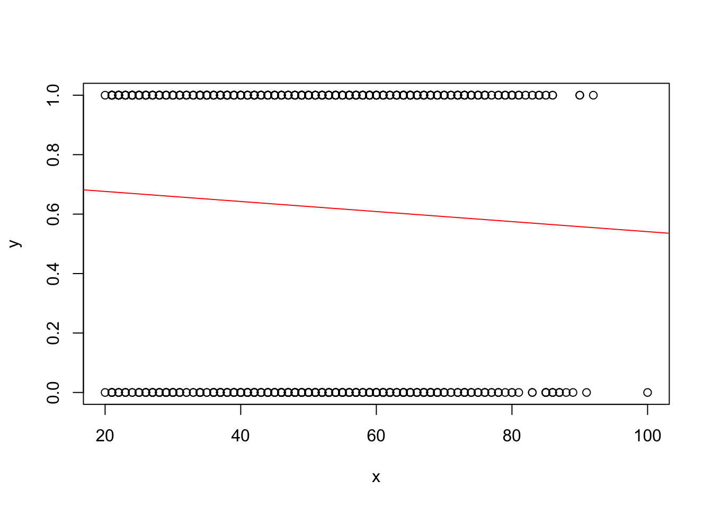
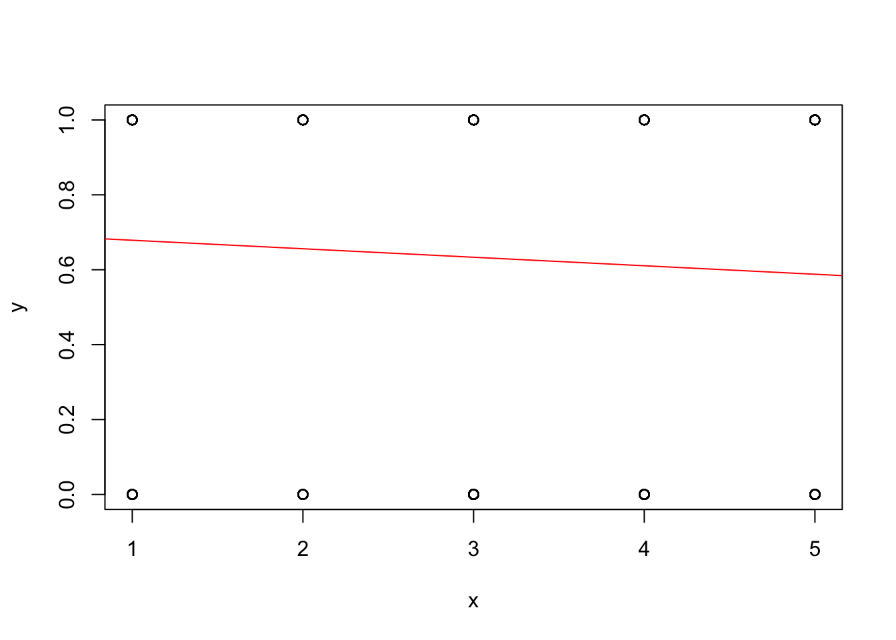
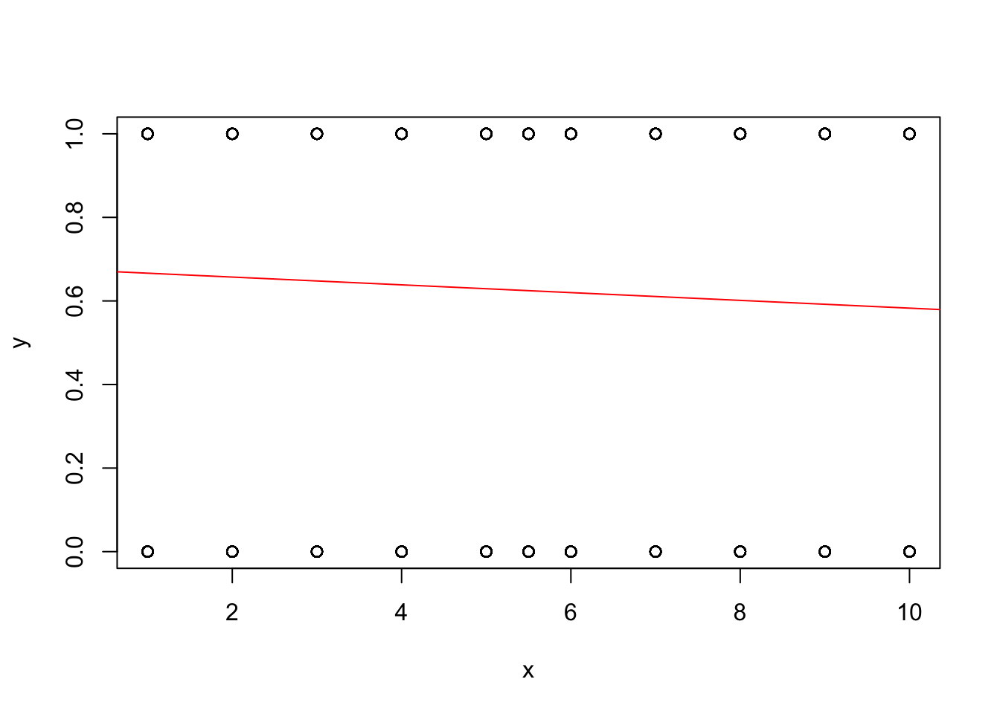

library(haven)
library(tidyverse)
library(GGally)
## Step 3
TEDS_2016 <- read_stata("https://github.com/datageneration/home/blob/master/DataProgramming/data/TEDS_2016.dta?raw=true")
summary(TEDS_2016) District Sex Age Edu Arear
Min. : 201 Min. :1.000 Min. :1.0 Min. :1.000 Min. :1.000
1st Qu.:1401 1st Qu.:1.000 1st Qu.:2.0 1st Qu.:2.000 1st Qu.:1.000
Median :6406 Median :1.000 Median :3.0 Median :3.000 Median :3.000
Mean :4661 Mean :1.486 Mean :3.3 Mean :3.334 Mean :2.744
3rd Qu.:6604 3rd Qu.:2.000 3rd Qu.:5.0 3rd Qu.:5.000 3rd Qu.:4.000
Max. :6806 Max. :2.000 Max. :5.0 Max. :9.000 Max. :6.000
Career Career8 Ethnic Party
Min. :1.000 Min. :1.000 Min. :1.000 Min. : 1.00
1st Qu.:1.000 1st Qu.:2.000 1st Qu.:1.000 1st Qu.: 5.00
Median :2.000 Median :4.000 Median :1.000 Median : 7.00
Mean :2.683 Mean :3.811 Mean :1.658 Mean :13.02
3rd Qu.:4.000 3rd Qu.:5.000 3rd Qu.:2.000 3rd Qu.:25.00
Max. :5.000 Max. :8.000 Max. :9.000 Max. :26.00
PartyID Tondu Tondu3 nI2
Min. :1.000 Min. :1.000 Min. :1.000 Min. : 1.00
1st Qu.:2.000 1st Qu.:3.000 1st Qu.:2.000 1st Qu.: 1.00
Median :2.000 Median :4.000 Median :2.000 Median : 3.00
Mean :4.522 Mean :4.127 Mean :2.667 Mean :35.13
3rd Qu.:9.000 3rd Qu.:5.000 3rd Qu.:3.000 3rd Qu.:98.00
Max. :9.000 Max. :9.000 Max. :9.000 Max. :98.00
votetsai green votetsai_nm votetsai_all
Min. :0.0000 Min. :0.0000 Min. :0.0000 Min. :0.0000
1st Qu.:0.0000 1st Qu.:0.0000 1st Qu.:0.0000 1st Qu.:0.0000
Median :1.0000 Median :0.0000 Median :1.0000 Median :1.0000
Mean :0.6265 Mean :0.3781 Mean :0.6265 Mean :0.5478
3rd Qu.:1.0000 3rd Qu.:1.0000 3rd Qu.:1.0000 3rd Qu.:1.0000
Max. :1.0000 Max. :1.0000 Max. :1.0000 Max. :1.0000
NA's :429 NA's :429 NA's :248
Independence Unification sq Taiwanese
Min. :0.0000 Min. :0.0000 Min. :0.0000 Min. :0.0000
1st Qu.:0.0000 1st Qu.:0.0000 1st Qu.:0.0000 1st Qu.:0.0000
Median :0.0000 Median :0.0000 Median :1.0000 Median :1.0000
Mean :0.2888 Mean :0.1225 Mean :0.5172 Mean :0.6272
3rd Qu.:1.0000 3rd Qu.:0.0000 3rd Qu.:1.0000 3rd Qu.:1.0000
Max. :1.0000 Max. :1.0000 Max. :1.0000 Max. :1.0000
edu female whitecollar lowincome
Min. :1.000 Min. :0.0000 Min. :0.0000 Min. :1.000
1st Qu.:2.000 1st Qu.:0.0000 1st Qu.:0.0000 1st Qu.:4.000
Median :3.000 Median :0.0000 Median :1.0000 Median :5.000
Mean :3.301 Mean :0.4864 Mean :0.5373 Mean :4.343
3rd Qu.:5.000 3rd Qu.:1.0000 3rd Qu.:1.0000 3rd Qu.:5.000
Max. :5.000 Max. :1.0000 Max. :1.0000 Max. :5.000
NA's :10
income income_nm age KMT
Min. : 1.000 Min. : 1.000 Min. : 20.00 Min. :0.0000
1st Qu.: 3.000 1st Qu.: 2.000 1st Qu.: 35.00 1st Qu.:0.0000
Median : 5.500 Median : 5.000 Median : 49.00 Median :0.0000
Mean : 5.324 Mean : 5.281 Mean : 49.11 Mean :0.2296
3rd Qu.: 7.000 3rd Qu.: 8.000 3rd Qu.: 61.00 3rd Qu.:0.0000
Max. :10.000 Max. :10.000 Max. :100.00 Max. :1.0000
NA's :330
DPP npp noparty pfp
Min. :0.0000 Min. :0.00000 Min. :0.0000 Min. :0.00000
1st Qu.:0.0000 1st Qu.:0.00000 1st Qu.:0.0000 1st Qu.:0.00000
Median :0.0000 Median :0.00000 Median :0.0000 Median :0.00000
Mean :0.3497 Mean :0.02544 Mean :0.3716 Mean :0.01893
3rd Qu.:1.0000 3rd Qu.:0.00000 3rd Qu.:1.0000 3rd Qu.:0.00000
Max. :1.0000 Max. :1.00000 Max. :1.0000 Max. :1.00000
South north Minnan_father Mainland_father
Min. :0.0000 Min. :0.0000 Min. :0.0000 Min. :0.0000
1st Qu.:0.0000 1st Qu.:0.0000 1st Qu.:0.0000 1st Qu.:0.0000
Median :0.0000 Median :0.0000 Median :1.0000 Median :0.0000
Mean :0.4947 Mean :0.4799 Mean :0.7225 Mean :0.1024
3rd Qu.:1.0000 3rd Qu.:1.0000 3rd Qu.:1.0000 3rd Qu.:0.0000
Max. :1.0000 Max. :1.0000 Max. :1.0000 Max. :1.0000
Econ_worse Inequality inequality5 econworse5
Min. :0.0000 Min. :0.0000 Min. :1.000 Min. :1.000
1st Qu.:0.0000 1st Qu.:1.0000 1st Qu.:4.000 1st Qu.:3.000
Median :1.0000 Median :1.0000 Median :5.000 Median :4.000
Mean :0.5544 Mean :0.9355 Mean :4.495 Mean :3.644
3rd Qu.:1.0000 3rd Qu.:1.0000 3rd Qu.:5.000 3rd Qu.:4.000
Max. :1.0000 Max. :1.0000 Max. :5.000 Max. :5.000
Govt_for_public pubwelf5 Govt_dont_care highincome
Min. :0.0000 Min. :1.000 Min. :0.0000 Min. :0.0000
1st Qu.:0.0000 1st Qu.:2.000 1st Qu.:0.0000 1st Qu.:0.0000
Median :0.0000 Median :3.000 Median :0.0000 Median :1.0000
Mean :0.4249 Mean :2.877 Mean :0.4988 Mean :0.5765
3rd Qu.:1.0000 3rd Qu.:4.000 3rd Qu.:1.0000 3rd Qu.:1.0000
Max. :1.0000 Max. :5.000 Max. :1.0000 Max. :1.0000
NA's :330
votekmt votekmt_nm Blue Green No_Party
Min. :0.0000 Min. :0.0000 Min. :0 Min. :0 Min. :0
1st Qu.:0.0000 1st Qu.:0.0000 1st Qu.:0 1st Qu.:0 1st Qu.:0
Median :0.0000 Median :0.0000 Median :0 Median :0 Median :0
Mean :0.2053 Mean :0.2752 Mean :0 Mean :0 Mean :0
3rd Qu.:0.0000 3rd Qu.:1.0000 3rd Qu.:0 3rd Qu.:0 3rd Qu.:0
Max. :1.0000 Max. :1.0000 Max. :0 Max. :0 Max. :0
NA's :429
voteblue voteblue_nm votedpp_1 votekmt_1
Min. :0.0000 Min. :0.0000 Min. :0.0000 Min. :0.0000
1st Qu.:0.0000 1st Qu.:0.0000 1st Qu.:0.0000 1st Qu.:0.0000
Median :0.0000 Median :0.0000 Median :1.0000 Median :0.0000
Mean :0.2787 Mean :0.3735 Mean :0.5256 Mean :0.2309
3rd Qu.:1.0000 3rd Qu.:1.0000 3rd Qu.:1.0000 3rd Qu.:0.0000
Max. :1.0000 Max. :1.0000 Max. :1.0000 Max. :1.0000
NA's :429 NA's :187 NA's :187 ## Step 4
regplot <- function(x, y) {
fit <- lm(y ~ x)
plot(x, y)
abline(fit, col = "red")
}
## Step 5
teds <- na.omit(TEDS_2016[, c("votetsai", "age", "edu", "income")])
# Age and Vote
regplot(teds$age, teds$votetsai)
# Education and Vote
regplot(teds$edu, teds$votetsai)
# Income and Vote
regplot(teds$income, teds$votetsai)
## Step 6
# What is the problem?
# The dependent variable is binary, however, a linear regression assumes that the dependent variable must be continuous.
## Step 7
# Conduct a logistic regression instead
logistic_reg <- glm(votetsai ~ age + edu + income,
data = teds,
family = binomial)
summary(logistic_reg)
Call:
glm(formula = votetsai ~ age + edu + income, family = binomial,
data = teds)
Coefficients:
Estimate Std. Error z value Pr(>|z|)
(Intercept) 2.508583 0.379569 6.609 3.87e-11 ***
age -0.021731 0.004656 -4.668 3.05e-06 ***
edu -0.238448 0.054069 -4.410 1.03e-05 ***
income -0.020470 0.022460 -0.911 0.362
---
Signif. codes: 0 '***' 0.001 '**' 0.01 '*' 0.05 '.' 0.1 ' ' 1
(Dispersion parameter for binomial family taken to be 1)
Null deviance: 1661.8 on 1256 degrees of freedom
Residual deviance: 1632.0 on 1253 degrees of freedom
AIC: 1640
Number of Fisher Scoring iterations: 4probs <- predict(logistic_reg, type = "response")
pred <- ifelse(probs > 0.5, 1, 0)
table(Predicted = pred, Actual = teds$votetsai) Actual
Predicted 0 1
0 45 39
1 425 748# allows us to model the probabilities between 0 and 1